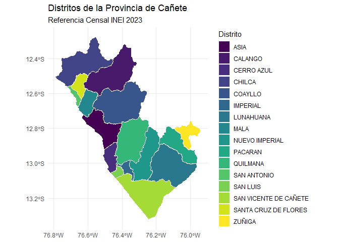
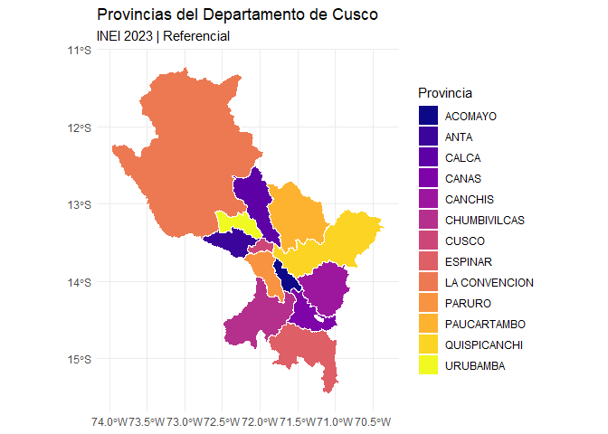

rsdot proporciona acceso programático a la información geográfica producida y recopilada por la Secretaría de Demarcación y Organización Territorial (SDOT) de la Presidencia del Consejo de Ministros (PCM) del Perú.
El paquete facilita el acceso y manipulación de diversas capas vectoriales, incluyendo:
Límites censales INEI 2023
Provincias, distritos y departamentos
Información del modelo geográfico SDOT
Infraestructura, centros poblados, riesgos y peligros
Otras capas temáticas territoriales
⚠️ Importante:
Los límites censales del INEI provistos por este paquete son referenciales y no constituyen límites oficiales ni tienen efecto legal demarcatorio.
✨ Características
Acceso programático a datos espaciales del Perú.
Descarga automática desde OSF con caché inteligente.
Corrección robusta de caracteres especiales (Ñ, tildes).
Compatible con sf, ggplot2, dplyr y herramientas SIG modernas.
Funciones principales:
get_departamentos()
get_provincias()
get_distritos()
📦 Instalación
Instalar la versión de desarrollo desde GitHub:
install.packages("remotes")
remotes::install_github("PaulESantos/rsdot")
# or
install.packages("pak")
pak::pak("PaulESantos/rsdot")🚀 Ejemplos
Cargar el paquete
Obtener departamentos
deps <- get_departamentos()
#> Descargando: Límites Censales Departamentales (INEI 2023)...
#> Fuente: OSF - Repositorio DEMARCA
#> ✓ Descarga completada
#> Descomprimiendo archivos...
#> Cargando geometrías...
#> ✓ Datos cargados: 25 departamentos
deps
#> Simple feature collection with 25 features and 7 fields
#> Geometry type: MULTIPOLYGON
#> Dimension: XY
#> Bounding box: xmin: -81.32823 ymin: -18.35093 xmax: -68.65228 ymax: -0.03860597
#> Geodetic CRS: WGS 84
#> # A tibble: 25 × 8
#> gid iddpto nombdep capital tipo_norma numero fecha
#> <int> <chr> <chr> <chr> <chr> <chr> <date>
#> 1 1 01 AMAZONAS CHACHAPOYAS LEY S/N 1832-11-21
#> 2 2 02 ANCASH HUARAZ LEY S/N 1851-11-05
#> 3 3 03 APURIMAC ABANCAY LEY S/N 1873-04-28
#> 4 4 04 AREQUIPA AREQUIPA REGLAMENTO S/N 1822-04-26
#> 5 5 05 AYACUCHO AYACUCHO REGLAMENTO S/N 1822-04-26
#> 6 6 06 CAJAMARCA CAJAMARCA LEY S/N 1857-01-02
#> 7 7 07 CALLAO CALLAO <NA> <NA> NA
#> 8 8 08 CUSCO CUSCO REGLAMENTO S/N 1822-04-26
#> 9 9 09 HUANCAVELICA HUANCAVELICA LEY S/N 1857-01-02
#> 10 10 10 HUANUCO HUANUCO LEY S/N 1869-01-24
#> # ℹ 15 more rows
#> # ℹ 1 more variable: geometry <MULTIPOLYGON [°]>Visualización básica
library(ggplot2)
ggplot(deps) +
geom_sf(fill = "steelblue", color = "white") +
theme_minimal() +
labs(
title = "Departamentos del Perú",
caption = "Fuente: SDOT - PCM / INEI 2023"
)
Obtener provincias de un departamento
cusco_prov <- get_provincias(departamento = "CUSCO")
#> Descargando: Límites Censales Provinciales (INEI 2023)...
#> Fuente: OSF - Repositorio DEMARCA
#> ✓ Descarga completada
#> Descomprimiendo archivos...
#> Cargando geometrías...
#> ✓ Filtrado por departamento: 13 provincia(s) en CUSCO
#> ✓ Datos cargados: 13 provincia(s)
head(cusco_prov)
#> Simple feature collection with 6 features and 9 fields
#> Geometry type: MULTIPOLYGON
#> Dimension: XY
#> Bounding box: xmin: -72.77286 ymin: -14.88788 xmax: -70.78982 ymax: -12.50659
#> Geodetic CRS: WGS 84
#> # A tibble: 6 × 10
#> gid iddpto nombdep idprov nombprov capital tipo_norma numero fecha
#> <int> <chr> <chr> <chr> <chr> <chr> <chr> <chr> <date>
#> 1 3 08 CUSCO 0802 ACOMAYO ACOMAYO Ley S/N 1861-02-23
#> 2 9 08 CUSCO 0803 ANTA ANTA Ley S/N 1839-11-19
#> 3 28 08 CUSCO 0804 CALCA CALCA Reglament… S/N 1825-06-21
#> 4 31 08 CUSCO 0805 CANAS YANAOCA Ley S/N 1833-10-14
#> 5 32 08 CUSCO 0806 CANCHIS SICUANI Ley S/N 1833-10-14
#> 6 54 08 CUSCO 0807 CHUMBIVILCAS SANTO T… Reglament… S/N 1825-06-21
#> # ℹ 1 more variable: geometry <MULTIPOLYGON [°]>
#Mapa de provincias
ggplot(cusco_prov) +
geom_sf(aes(fill = nombprov), color = "white", linewidth = 0.3) +
scale_fill_viridis_d(option = "plasma") +
theme_minimal() +
labs(
title = "Provincias del Departamento de Cusco",
subtitle = "INEI 2023 | Referencial",
fill = "Provincia"
)
Obtener distritos Ejemplo: Cañete (Lima)
canete <- get_distritos(
provincia = "CAÑETE",
departamento = "LIMA"
)
#> Descargando: Límites Censales Distritales (INEI 2023)...
#> Fuente: OSF - Repositorio DEMARCA
#> Nota: Este es un archivo grande, puede tardar varios minutos...
#> ✓ Descarga completada
#> Descomprimiendo archivos...
#> Cargando geometrías distritales...
#> ✓ Filtrado por departamento: 171 distrito(s) en LIMA
#> ✓ Filtrado por provincia: 16 distrito(s) en CAÑETE
#> ✓ Filtrado completado por departamento > provincia: 16 distrito(s)
canete
#> Simple feature collection with 16 features and 11 fields
#> Geometry type: MULTIPOLYGON
#> Dimension: XY
#> Bounding box: xmin: -76.79125 ymin: -13.32351 xmax: -75.94078 ymax: -12.27573
#> Geodetic CRS: WGS 84
#> # A tibble: 16 × 12
#> gid ubigeo nombdep nombprov nombdist capital region_nat tipo_norma numero
#> <int> <chr> <chr> <chr> <chr> <chr> <chr> <chr> <chr>
#> 1 825 150501 LIMA CAÑETE SAN VICEN… SAN VI… COSTA Ley S/N
#> 2 826 150502 LIMA CAÑETE ASIA ASIA COSTA Ley 15112
#> 3 827 150505 LIMA CAÑETE CHILCA CHILCA COSTA Ley S/N
#> 4 828 150507 LIMA CAÑETE IMPERIAL IMPERI… COSTA Ley 1170
#> 5 829 150509 LIMA CAÑETE MALA MALA COSTA Ley S/N
#> 6 830 150512 LIMA CAÑETE QUILMANA QUILMA… COSTA Ley 9962
#> 7 831 150515 LIMA CAÑETE SANTA CRU… SANTA … COSTA Ley 4611
#> 8 895 150503 LIMA CAÑETE CALANGO CALANGO COSTA Ley S/N
#> 9 896 150504 LIMA CAÑETE CERRO AZUL CERRO … COSTA Ley Regio… 464
#> 10 897 150506 LIMA CAÑETE COAYLLO COAYLLO COSTA Ley S/N
#> 11 898 150508 LIMA CAÑETE LUNAHUANA LUNAHU… COSTA Ley S/N
#> 12 899 150510 LIMA CAÑETE NUEVO IMP… NUEVO … COSTA Ley 14154
#> 13 900 150511 LIMA CAÑETE PACARAN PACARAN COSTA Ley S/N
#> 14 901 150513 LIMA CAÑETE SAN ANTON… SAN AN… COSTA Ley 4611
#> 15 902 150514 LIMA CAÑETE SAN LUIS SAN LU… COSTA Ley S/N
#> 16 903 150516 LIMA CAÑETE ZUÑIGA ZUÑIGA COSTA Ley 9674
#> # ℹ 3 more variables: fecha_fin <date>, comentario <chr>,
#> # geometry <MULTIPOLYGON [°]>
#Visualización
ggplot(canete) +
geom_sf(aes(fill = nombdist), color = "white", linewidth = 0.3) +
theme_minimal() +
labs(
title = "Distritos de la Provincia de Cañete",
subtitle = "Referencia Censal INEI 2023",
fill = "Distrito"
)
👤 Autor
Paul Efren Santos Andrade ORCID: 0000-0002-6635-0375 mailto:paulefrens@gmail.com
🌐 Sitio web del paquete
Documentación ampliada: > 👉 https://paulesantos.github.io/rsdot/